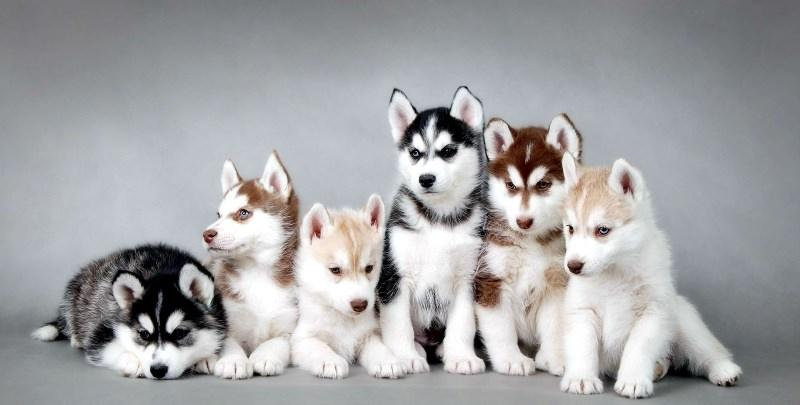

Сибирский хаски — заводская специализированная порода собак, выведенная чукчами северо-восточной части Сибири и зарегистрированная американскими кинологами в 1930-х годах как ездовая собака, полученная от аборигенных собак Дальнего Востока России, в основном из Анадыря, Колымы, Камчатки у местных оседлых приморских племён — юкагиров, кереков, азиатских эскимосов и приморских чукчей — анкальын (приморские, поморы — от анкы (море)). Эта аборигенная ездовая собака Дальнего Востока является одной из древнейших пород собак. В настоящее время выведенная порода «сибирский хаски» используется не только как ездовая, но и как собака-компаньон и шоу-выставочная собака.
История породы
Собаки русского Дальнего Востока
Ездовые собаки Дальнего Востока России ещё с неолита разводились аборигенными оседлыми народами, занимавшимися ловлей рыбы и охотой на морского зверя и принадлежавших к так называемой «охотской культуре». Потомки этих народов — нивхи, юкагиры-чуванцы, кереки, отчасти азиатские эскимосы, сохранили традицию разведения ездовых. Неслучайно эти районы соседние народы называли «страной собак»: имея достаточное количество корма — сушеной рыбы, они были в состоянии прокормить большое количество псов, необходимых для хорошей упряжки, для которой требовалось, как минимум, 9 собак.
Развитию ездового собаководства толчок дали в XVII—XVIII веках русские, активно осваивавшие эти районы в поисках «мягкого золота» — им требовался транспорт для доставки товаров, почты и для езды должностных лиц. Появился и распространился новый тип более крупной и вместительной нарты, так называемый, «восточно-сибирский русский». И, соответственно, потребовалось большее количество собак для её транспортировки. Русские охотно нанимали местных каюров и активно обучались сами. Когда в 1920 г. Амундсен побывал у русских старожилов Колымы, то он восторженно написал: «В езде на собаках эти русские и чукчи стоят выше всех, кого мне приходилось видеть».
Когда началась «Золотая лихорадка» на Аляске, резко возрос спрос на ездовых собак и у жителей Северной Америки. А так как русский Дальний Восток ими был освоен довольно неплохо (американские браконьеры активно вели китобойный и тюлений промысел в районах Чукотки, Камчатки и Охотского моря), то собак повезли из этих мест.
Переселение в США
Ездовые собаки русского Дальнего Востока впервые были завезены на Аляску в 1908 году. Поскольку они обладали отличными гоночными качествами, то продолжали привозиться в США в течение последующих двух десятилетий для участия в гонках и для дальнейшего разведения. В СССР же, когда был составлен общий реестр северных пород, ездовые сибирского Севера, Дальнего Востока, Сахалина, Чукотки выпали из этого реестра, поскольку началась политика слияния пород в одну, а затем ездовая собака была признана не перспективной, поскольку её должен был заменить авиатранспорт и мото-сани. В 1934 году порода «сибирский хаски» была официально признана в США и на неё был установлен стандарт.
История сохранила для нас имена людей, которые стояли у истоков создания этой заводской породы. Это торговец пушниной родом из Российской империи Уильям Гусак (участвовал в аляскинских гонках в 1909 году), шотландский золотодобытчик Фоке Маул Ремси (в 1911 году), торговец пушниной Олаф Свенсон, серьёзно изучавший чукотскую практику содержания и разведения этих собак в конце 1930-х годов, и, конечно же, каюр Леонард Сеппала
Название породы
Термин «хаски» (искаженное «эски») изначально обозначал эскимосов. Впоследствии это название закрепилось за эскимосским хаски. Это собаки с густой шерстью, острой мордой со стоячими ушами и прямым хвостом. Когда первые представители чукотских собак прибыли в Северную Америку, для отличия от эскимосских хаски их стали называть сибирскими хаски, и это название сохранилось за ними по сей день.
Дальнейшее улучшение гоночных характеристик
Ездовой спорт не стоял на месте и скорости сибирских хаски спортсменам уже не хватало. Они начали искать путь создания породы, которая, сохраняя достоинства сибирских хаски, показывала бы гораздо большую скорость. Этим путём стала метисация — смешение кровей лучших особей аборигенных ездовых пород, легавых и гончих пород собак и сибирского хаски. Полученные собаки оказались пригодны только к применению в ездовом спорте, зато они превзошли сибирских хаски по гоночным характеристикам. Сегодня их относят к отдельной породе — аляскинским хаски (не путать с аляскинским маламутом) — но эта порода не имеет стандарта и не признана МКФ, потому что является метисной группой, из-за чего собаки крайне разнотипны. Впрочем, спортсмены не хотят официального признания аляскинских хаски, потому что за этим последует неизбежное появление выставочной линии разведения породы, что отрицательно скажется на гоночных качествах собак. В настоящее время все победители аляскинских гонок ездят на упряжках, составленных именно из аляскинских хаски; каждый успешный спортсмен имеет свой «рецепт» создания лучших собак и хранит его в тайне.
Чистопородные сибирские хаски по-прежнему участвуют в гонках, однако сильно проигрывают метисам. Так, например, в 2010 году на аляскинских гонках Iditarod Trail Sled Dog Race лучшая упряжка, составленная из сибирских хаски, пришла 42-й (из 55)[6] (каюр Блейк Фрекинг), поставив рекорд гонки для чистопородных собак (время: 11 дней 20 часов 39 минут 11 секунд, время лидера: 8 дней 23 часа 59 минут 9 секунд).
Cтандарт породы
Общий вид
Общий вид собаки породы сибирский хаски — это прежде всего облик легкости и быстроты. Это собака среднего роста, с компактным телосложением. При осмотре сбоку длина корпуса от плечелопаточного сочленения до седалищного бугра чуть больше высоты собаки в холке. Шерстный покров достаточно густой, с хорошо развитым подшерстком. Уши прямостоячие, хвост имеет форму пера. Собака прекрасно работает в упряжке, легко перевозит нетяжелые грузы. Животные выносливые, кобели внешне отличаются от самок более мощным костяком и пропорциями тела. Самки имеют более хрупкий и утонченный костяк, но назвать их слабыми нельзя. Если собак этой породы правильно кормить, они не имеют избыточного веса.Окрас
Согласно стандарту, окрас сибирского хаски может быть практически любой: от чёрного до белого, с отметинами и полосами по всему туловищу. Наиболее популярными являются черно-белый и серо-белый окрас. Реже встречается коричнево-белый и палевый, пиболд (пятнистый) окрас. Чистый чёрный, коричневый (без белого) и чисто белый окрасы крайне редки, но не являются дисквалифицирующими. Типичным, хотя и не обязательным, является наличие маски вокруг глаз (чёрной или белой) и двойной вертикальной полоски на лбу у основания носа.
Согласно стандарту, окрас сибирского хаски может быть практически любой: от чёрного до белого, с отметинами и полосами по всему туловищу. Наиболее популярными являются черно-белый и серо-белый окрас. Реже встречается коричнево-белый и палевый, пиболд (пятнистый) окрас. Чистый чёрный, коричневый (без белого) и чисто белый окрасы крайне редки, но не являются дисквалифицирующими. Типичным, хотя и не обязательным, является наличие маски вокруг глаз (чёрной или белой) и двойной вертикальной полоски на лбу у основания носа.
Согласно стандарту, окрас сибирского хаски может быть практически любой: от чёрного до белого, с отметинами и полосами по всему туловищу. Наиболее популярными являются черно-белый и серо-белый окрас. Реже встречается коричнево-белый и палевый, пиболд (пятнистый) окрас. Чистый чёрный, коричневый (без белого) и чисто белый окрасы крайне редки, но не являются дисквалифицирующими. Типичным, хотя и не обязательным, является наличие маски вокруг глаз (чёрной или белой) и двойной вертикальной полоски на лбу у основания носа.
Согласно стандарту, окрас сибирского хаски может быть практически любой: от чёрного до белого, с отметинами и полосами по всему туловищу. Наиболее популярными являются черно-белый и серо-белый окрас. Реже встречается коричнево-белый и палевый, пиболд (пятнистый) окрас. Чистый чёрный, коричневый (без белого) и чисто белый окрасы крайне редки, но не являются дисквалифицирующими. Типичным, хотя и не обязательным, является наличие маски вокруг глаз (чёрной или белой) и двойной вертикальной полоски на лбу у основания носа.